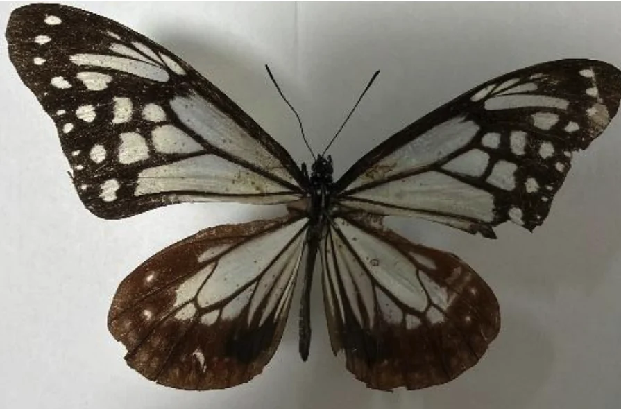
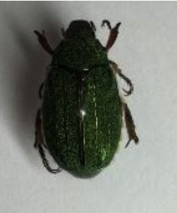
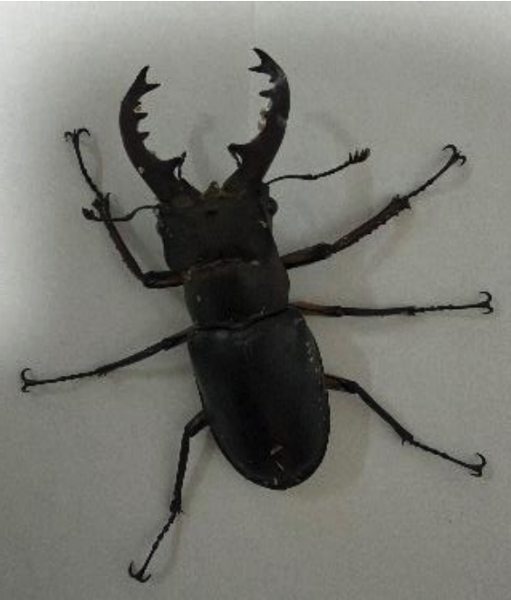
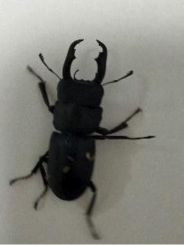
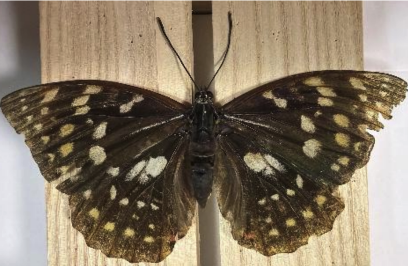
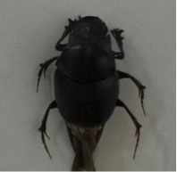
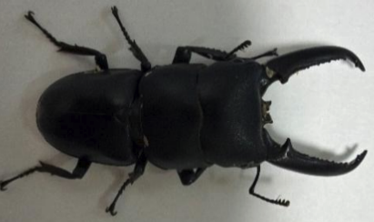

夏の昆虫採集
中学一年 小田 晴士
1.はじめに
早稲田中学では中学一年生は夏の合宿に参加することができません。
そのため自分で山梨県甲州市、長野県松本市、対馬に自分で出向き昆虫採集をしました。
今回はそこで取れた昆虫について紹介したいと思います。
2.山梨県甲州市でとれた昆虫について
アサギマダラ(チョウ目タテハチョウ科)

今回泊まる予定の宿に行く途中の道で高所を飛んでいたので長網を用いて採集した個体です。チョウでは珍しく海を越えて日本本土、台湾、南西諸島などを行き来します。高尾山などでもとれるそうですが、自分が今年別の機会に採集に行った際には曇りで出会うことができませんでした。
キンスジコガネ (コウチュウ目コガネムシ科)

今回の宿ではライトトラップを貸し出してくれる宿であったため、夜にかけてライトトラップをしたところ飛んできました。背中に金色の筋が入っておりとても美しいです。その地域では個体数が多く、二日で6個体も観察をすることができました。
ミヤマクワガタ(コウチュウ目クワガタムシ科)

キンスジコガネと同じくライトトラップに飛来してきました。時期的にはオスが多いはずでしたがメスが多かったです。計 60 個体程度観察ができました。オスでは 65 ミリが最大個体でしたが、足がかけてしまっていました。
3.長野県松本市でとれた昆虫について
スジクワガタ(コウチュウ目クワガタムシ科)
オオムラサキ(チョウ目タテハチョウ科)
3.対馬でとれた昆虫
ヒメダイコクコガネ(コウチュウ目コガネムシ科)
ツシマヒラタクワガタ(コウチュウ目クワガタムシ科)

今年祖父母の家から 10 分程度の場所にクヌギが多く生えているスポットを発見することができたので、観察できました。スジクワガタは広い森林があるところに主に生息しているため見つけるのは難度が高いです。

スジクワガタと同じスポットで観察することができました。昼の 10 時ころにクヌギの木の樹液を吸っていたため自分の網で捕獲することができました。
メスでしたが、時期が遅かったためかなり鱗粉が剥げてしまっていました。そのスポットでは 7 月上旬に行けばおそらくきれいな個体が多くみられるので来年採集したいです。

対馬にしかいない固有種のため希少な存在です。夜中の街灯採集の時に、たまたま飛来した個体を発見することができました。メスであったため、大きな角はありませんでしたが、うれしい出会いでした。

この種は本土のヒラタクワガタの亜種であり顎が長いです。探しましたがなかなか見つからず、二日目の夜に街頭で偶然採集をすることができました。しかし、昼に寄ったお店でクワガタを取っていると伝えたところ、場所を紹介してもらえることになりました。そこで 62 ミリの大型の個体を採集することができました。
4.感想
今回の夏休みでは多くの昆虫を採集することができ、満足できました。この部誌に紹介できていない虫が多く、このひと夏で 50 種程度もの虫を捕獲することができました。紹介出来なかった虫については標本で展示しているので、ぜひじっくり見てみてください。
特集
12